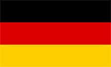
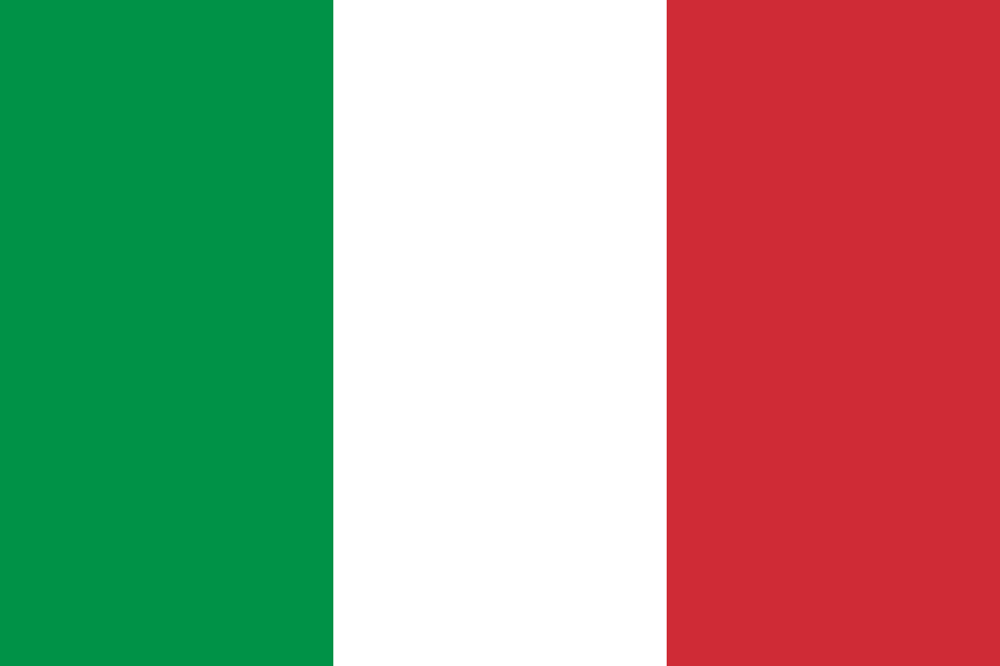

| Type | Name | Date of birth | Contract until | ||
|---|---|---|---|---|---|
| Staff | |||||
| Manager | Hans-Dieter Flick | 24/02/1965 | 2023 | ||
| Assistant Manager | Danny Röhl | 28/04/1989 | 2023 | ||
| Assistant Manager | Hermann Gerland | 04/06/1954 | - | ||
| Assistant Manager | Miroslav Klose | 09/06/1978 | 2021 | ||
| Goalkeeping Coach | Toni Tapalovic | 10/10/1980 | 2021 | ||
| Conditioning Coach | Holger Broich | 18/09/1974 | 2021 | ||
| Fitness Coach |  Simon Martinello | 01/11/1984 | - | ||
| Chief Analyst | Egon Coordes | 13/06/1944 | - | ||
| Sporting Director |  Hasan Salihamidzic Hasan Salihamidzic |
13/06/1944 | - | ||
| Team Manager | Kathleen Krüger | 17/05/1985 | - | ||
| Board Members | |||||
| President | Herbert Hainer | 03/07/1954 | 2023 | ||
| Chairman | Karl-Heinz Rummenigge | 25/09/1955 | 2021 | ||
| Vice-Chairman | Jan-Christian Dreesen | 04/09/1967 | 2023 | ||
| Deputy chairman of the board | Uli Hoeneß | 05/01/1952 | - | ||
| Board Member | Jörg Wacker | 17/10/1967 | 2024 | ||
| Board Member | Oliver Kahn | 15/06/1969 | 2024 | ||